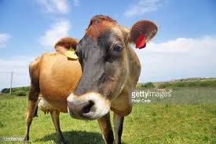
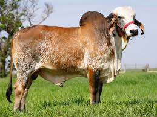

Vamos ver agora os tipos de vaquinhas que dá o leite pro nosso queijo do misto quente [peguei do site comprerural.com.br,valeu ae]
Jersey

Veio duma ilha lá do Canal da Mancha (entre Inglaterra e França,isso mesmo,
essa vaca já é das europa,chique né),tem mais ou menos 10 milhões deles por todo o mundo hoje,
tem vários motivos de porque escolher ela,e aí vai:
- Faz leite rapidinho e é bom de ter filho
- A novilha (adolescente) tem o primeiro filho mais rápido,dá
menos custo pra fazer pela primeira vez o leite.
- É bom de ter filho porque tem facilidade de parir e tem menor intervalo entre
cada um (IEP/Intervalo Entre Partos).
- Vive bastante
- Consegue ter filho por mais tempo (cê paga o preço dela até que rapidinho)
- Fica com 343.620 Lbs em mais de 20 anos -> fica com uns 156 kg marromenos
- Se adapta até que muito bem
- Ele aguenta todos tipos de temperatura (tem bastante facilidade de parir)
- Faz bastante leite tando livre ou num lugar fechado
- Um amor de vaca
- Sem dúvida a mais doce/vaca boa {não dá pra falar "gente boa" né hahaha},
mais pequenininha e vive bastante
- Até criança pode mexer com ela {eu quando era pequenininho brincava com a vaquinha da minha vó que
era olha só,olha lá->JERSEY,um amor,recomendo}
- Produção de leite/Peso do leite {vai entender essas medida de peso,só segue o sistema}
- Faz mais de 12 vezes seu peso em leite {pega a vaca,imagina que são 12,só que é leite,
é,é muita coisa},{uma fez marromenos 116kg de leite e 7kg de gordura}
- Dá grana/bufunfa
- Come de tudo
- Produz mais por área de forragem (aquelas bolas lá de palha pra dar pras vacas
comer).
- O leite é muito bom (tanto que muitas indústrias paga bem por ele)
- Tem bastante proteína e cálcio (minerais que os humanos precisam muito)
- Sólidos gordurosos {todos os elementos do leite menos água e gordura,eles ficam em
equilíbrio,bem estável (até as partes do leite fica ZEN,é brabo né amigo)} : proteínas,
minerais,etc
- Cruzamentos (os filhos deles lá que é mistura)
- Jersey,que tá num estado mais puro (que tá com aquele sangue lá das europa puro)
- Pare bem (de ter filho né,não é como se
gritasse pra ela PARE e ela para na hora,
daí o fazendeiro fala pra ela :
'carambolas,cê pare bem ein'),lida bem com calor e faz bastante leite e gordura pra manteiga.
Gir

Peguei do site cpt.com.br [oque cpt significa eu não sei,pergunta pra eles oxi]
É das selvas lá da Índia,bichinho doce mas brabo,luta até com leão,as características dela :
- Porte médio (nem grande nem pequeno demais)
- A cor do seu pelo vai de avermelhado até o rosado,e a cor da cabeça vai do preto total ou
só partes ou vermelho total ou só partes.(em resumo ele tem marromenos 12 cores,oxi,ele tem
mais cores que minha escola toda,faze uque né)
- Já a cabeça dele é bem única,é bem arredondada (não sei porque mas me lembra alguém careca hahaha)
,a boca dele é lisa,vai pra frente (tipo cachorro e cavalo né) e a cabeça é bem larga também
(não esperava também um boi daquele tamanho com a cabeça de um pinscher)
- E a marrafa (é tipo a
parte de cima da testona dele,a que você taca a mão pra
fazer carinho e parece um morrinho) é bem
jogada pra trás,
- nos
machos o chanfro (entre os olhos,aquela leve subidinha que você também taca a mão pra fazer carinho)
é reto,médio e largo,nas fêmeas é estreito e comprido (então,se tiver na dúvida se é quem monta ou
quem é montado,ao invés de olhar pra baixo deles e invadir sua intimidade,só olha pra cara deles [
brincadeirinha ein]).
- Os chifres não é grande nem pequeno demais,grossos na base (na área que tá grudada na cabeça deles),
o chifre sai da cabeça e vai pra baixo e pra trás (a cor é bem escura).
- Os olhos são pretos ou bem escuros,ficam mais no canto da cara e tem o formato de tipo sei lá um
ovo (círculo que não é perfeito,falaram eliptíco,eu vou lá saber que que é isso),a cara dele é bem
enrugada (cheio de rugas né) que protege o olho dele (viu,até rugas tem lado bom).
-
As orelhas são grandes,finas e caídas.
- O focinho/nariz dele é preto e grande/largo,cada buraco do nariz (eu me recuso a colocar narina,
o site e o problema é meu), é afastado e grande/largo.
- O corpo dele é grande (largo e comprido,traduzindo, bastante ombro e se ficasse em pé passava você)
- Nos machos o pescoço é médio e tem bastante músculo,nas fêmeas é fino e comprido.
- A barbela (aquela pelanquinha que fica na frente do pescoço e sai pulando quando eles corre),nos macho
é média e vai até o umbigo,e nas fêmea,é menor e mais macia(porque eu não sei,pergunta pro gir que ele sabe).
- Seu peito é largo e chama atenção
- A giba (aquela coisa que é tipo uma corcunda) dele é bem grande e fica na cernelha
(fim do pescoço e início das costas)
- O dorso (logo atrás daquela corcunda dele) e o lombo (entre o dorso e a bunda/garupa,eu falo bunda mesmo)
é largo e bem esticado.
- O tórax é fundo,tem costelas "arredondada"/curvada e bem separadas/afastadas (deve que elas pensa :
"ih alá,olha aquela outra costela metida só porque ela é a preferida dos humanos,vou ficar é longe dela")
- O flanco (mais lá pra cintura e bunda) é fundo e grande
- Tem :bainha,umbigo e prepúcio (olha pra baixo do macho,sabe aquela pelanca que é o pinto dele,é tudo aquilo
lá) grande/comprido.
- As ancas são grandes/largas e no mesmo nível do dorso (anca é aquele leve buraquinho,descida que tem do
lado mais embaixo da garupa,onde eles arranjam esses nomes eu não sei),
- A garupa/bunda dele é um cadinho de caída,e tem bastante músculo (também né,carregar esses
humanos pesados tem que ter força né).
- A cauda dele é bonita/harmoniosa,não é grande nem pequeno(média) e o pelo da ponta é preto (vassoura preta,
é que o pelo não é dos mais macios,igual a vassoura).
- As patas da frente (membros anteriores,sei lá porque fala assim) são curtos,não tão grudados,e a posição
das patas são boas (aprumos,distribuição do peso e sua posição em relação ao chão,oque tem haver
com a palavra aprumo eu não sei).
- As patas de trás (membros posteriores) também são curtos,bastante músculo (por isso é bom não ficar
de bobeira atrás dele,te dá um coice dos baum {se fala tipo bom com sotaque caipira}),não é tudo grudado
uma pata com a outra,a posição deles é boa (bem aprumados) e as patas/cascos é práticamente igual a das
patas da frente.
- Nos machos as bolas deles são grandes (bolsa escrotal desenvolvida), nas fêmeas a perereca (vulva)
tem a cor preta ou um tom escuro (também é dessenvolvida pra poder ter filhos melhor né),elas também tem
vúlvere (peito/teta) com pele macia (pra não machucar o filhote) e firme (pra não ficar caindo com todo
aquele peso do leite)
- Os cascos (os pés dele) são escuros,médios bem comformado (perfeito pra ele básicamente)
Coisas que você não quer no seu gado gir
- Lábio leporino (é uma boca horrível,feia demais coitado,se você ver uma boca esquisita demais num gir,
é isso)
- Barbela (pelanca) demais
- Ventre ("útero") pouco desenvolvido (fica difícil ter filho)
- Anca ("os buraquinho da bunda") estreito/pequeno/que não é largo
- Prepúcio/pinto relaxado/caído demais
- Garupa/bunda caída ou estreita/que não é larga (o normal é ser só um cadinho caída)
- Úbere (aquela bola onde tem os peitos/tetas) e tetas (onde sai o leite por mágica) caído e relaxado,
ce mexe e parece até uma salsicha molenga.
Motivos do porque usar gir pra produzir leite
- É muito valorizado pela sua qualidade e produção (faz muito leite até mesmo
na sua primeira produção/lactação)
- Se adapta muito bem,tanto que o DNA (letrinhas que diz como é você básicamente,tá no seu corpo todo)
é ótimo pra melhoramento genético (mistura tudo pra fazer uma super vaca ou boi brabo e top [básicametne]),
macho também é bom pra virar churrasco ex:Girolando.
- O leite dele é mais nutritivo que holandesa,mais que a Parda Suíça e passa de algumas cabras
(algumas,também não vamos exagerar).
- Porcentagem dos nutrientes do leite do gir :
- Proteína : 4,35%
- Gordura : 3,38%
- Lactose : 4,64%
- Sólidos totais : 13,18%